Здійснюємо регулярні перевезення за напрямком Київ-Львів-Братислава
🏛️ з Львова:
📍Виїзд: Львів 79000, вул. Двірцева 1- 🔰 Щоденно о 18:00 з жд вокзалу ч/з Польщу
Вартість поїздки 50€💶
Запис пасажирів: Марія 📞+380504590000🏙️ з Києва:
📍Виїзд: Київ, 02000, "Автостанція Київ"Графік
- 🔰 Вівторок о 10:00 Автостанція Київ
- 🔰 П'ятниця о 10:00 Автостанція Київ
- 🔰 Неділя о 10:00 Автостанція Київ
Вартість поїздки 60€💶
Запис пасажирів: Марія 📞+380504590000🎡 з Братислави:
Здійснюємо регулярні перевезення за напрямком Братислава-Львів-Київ
📍Виїзд: Братислава 81109, Chalupkova 2596/7, Поруч з Bottova 7 ( Центр допомоги Українцям) та ТРЦ «Nivy Centrum»🏛️До Львова
- 🔰 Щодня о 22:00
Вартість поїздки: 50€💶
🏙️До Києва
- 🔰 Середа о 22:00
- 🔰 П'ятниця о 22:00
- 🔰 Неділя о 22:00
Вартість поїздки: 60€💶
Запис пасажирів: Марія 📞+380504590000Здійснюємо щоденні перевезення за напрямком Київ-Львів-Відень
🏛️ з Львова:
📍Виїзд: Львів 79000, вул. Двірцева 1- 🔰 Щоденно о 18:00 з жд вокзалу ч/з Польщу
- Вартість поїздки 60€💶
- Запис пасажирів: Марія 📞+380504590000
🏙️ з Києва:
📍Виїзд: Київ, 02000, "Автостанція Київ"- 🔰 Вівторок о 10:00 Автостанція Київ
- 🔰 П'ятниця о 10:00 Автостанція Київ
- 🔰 Неділя о 10:00 Автостанція Київ
- Вартість поїздки 70€💶
- Запис пасажирів: Марія 📞+380504590000
Здійснюємо щоденні перевезення за напрямком Відень-Львів-Київ
🎡 з Відня:
🏛️До Львова
📍Виїзд: Wien 1170, Wichtelgasse 66- 🔰 Щоденно о 21:00 через PL
- Доставляємо по місту Львів на Залізно-дорожній вокзал, Стрийський вокзал, АС-2
- Вартість поїздки: 60€💶
- Запис пасажирів: Марія 📞+380504590000
🏙️До Києва
- 🔰 Середа о 21:00 через PL
- 🔰 П'ятниця о 21:00 через PL
- 🔰 Неділя о 21:00 через PL
- Вартість поїздки: 70€💶
- Запис пасажирів: Марія 📞+380504590000
Здійснюємо регулярні перевезення за напрямком Київ-Львів-Лінц
🏛️ з Львова:
📍Виїзд: Львів 79000, вул. Двірцева 1- 🔰 Понеділок о 18:00 з жд вокзалу
- 🔰 Середа о 18:00 з жд вокзалу
- 🔰 П'ятниця о 18:00 з жд вокзалу
- 🔰 Субота о 18:00 з жд вокзалу
- 🔰 Неділя о 18:00 з жд вокзалу
Вартість поїздки 70€💶
Запис пасажирів: Оксана 📞+380674590000🏙️ з Києва:
📍Виїзд: Київ, 02000, "Автостанція Київ"- 🔰 П'ятниця о 10:00 Автостанція Київ
- 🔰 Неділя о 10:00 Автостанція Київ
Вартість поїздки 80€💶
Запис пасажирів: Оксана 📞+380674590000🏢 з Лінцу:
📍Виїзд: Kärntnerstraße 16s, 4020 Linz, поруч з автовокзалом- 🔰 Понеділок о 19:00
- 🔰 Вівторок о 19:00
- 🔰 Середа о 19:00
- 🔰 П'ятниця о 19:00
- 🔰 Неділя о 19:00
Вартість поїздки до Львова 70€💶, до Києва 80€💶
Запис пасажирів: Оксана 📞+380674590000Здійснюємо регулярні перевезення за напрямком Київ-Львів-Зальцбург
🏛️ з Львова:
📍Виїзд: Львів 79000, вул. Двірцева 1- 🔰 Понеділок о 18:00 з жд вокзалу
- 🔰 Середа о 18:00 з жд вокзалу
- 🔰 П'ятниця о 18:00 з жд вокзалу
- 🔰 Субота о 18:00 з жд вокзалу
- 🔰 Неділя о 18:00 з жд вокзалу
Вартість поїздки 80€💶
Запис пасажирів: Оксана 📞+380674590000🏙️ з Києва:
📍Виїзд: Київ, 02000, "Автостанція Київ"- 🔰 П'ятниця о 10:00 Автостанція Київ
- 🔰 Неділя о 10:00 Автостанція Київ
Вартість поїздки 90€💶
Запис пасажирів: Оксана 📞+380674590000🏢 з Зальцбургу:
📍Виїзд: Engelbert-Weiß-Weg 10, 5020 Salzburg, поруч з автовокзалом"- 🔰 Понеділок о 16:30
- 🔰 Вівторок о 16:30
- 🔰 Середа о 16:30
- 🔰 П'ятниця о 16:30
- 🔰 Неділя о 16:30
Вартість поїздки до Львова 80€💶, до Києва 90€💶
Запис пасажирів: Оксана 📞+380674590000Здійснюємо регулярні перевезення за напрямком Київ-Львів-Розенхайм
🏛️ з Львова:
📍Виїзд: Львів 79000, вул. Двірцева 1- 🔰 П'ятниця о 18:00 з жд вокзалу
Вартість поїздки 80€💶
Запис пасажирів: Оксана 📞+380674590000🏙️ з Києва:
📍Виїзд: Київ, 02000, "Автостанція Київ"- 🔰 П'ятниця о 10:00 Автостанція Київ
Вартість поїздки 90€💶
Запис пасажирів: Оксана 📞+380674590000🏢 з Розенхайму:
📍Виїзд: Ungererstraße, 80805 München, студентський парк"- 🔰 Неділя о 13:00
Вартість поїздки до Львова 80€💶, до Києва 90€💶
Запис пасажирів: Оксана 📞+380674590000Здійснюємо регулярні перевезення за напрямком Київ-Львів-Мюнхен
🏛️ з Львова:
📍Виїзд: Львів 79000, вул. Двірцева 1- 🔰 Понеділок о 18:00 з жд вокзалу
- 🔰 Середа о 18:00 з жд вокзалу
- 🔰 П'ятниця о 18:00 з жд вокзалу
- 🔰 Субота о 18:00 з жд вокзалу
- 🔰 Неділя о 18:00 з жд вокзалу
Вартість поїздки 80€💶
Запис пасажирів: Оксана 📞+380674590000🏙️ з Києва:
📍Виїзд: Київ, 02000, "Автостанція Київ"- 🔰 П'ятниця о 10:00 Автостанція Київ
- 🔰 Неділя о 10:00 Автостанція Київ
Вартість поїздки 90€💶
Запис пасажирів: Оксана 📞+380674590000🏢 з Мюнхену:
📍Виїзд: Ungererstraße, 80805 München, студентський парк"- 🔰 Понеділок о 13:00
- 🔰 Вівторок о 13:00
- 🔰 Середа о 13:00
- 🔰 П'ятниця о 13:00
- 🔰 Неділя о 13:00
Вартість поїздки до Львова 80€💶, до Києва 90€💶
Запис пасажирів: Оксана 📞+380674590000🚘Індивідуальні перевезення легковим автомобілем преміум класу
Пропонуємо індивідуальний трансфер Європою між країнами Польща, Чехія, Австрія, Німеччина. Преміум автомобіль 2020р Mercedes GLS 450, максимальна комплектація, підігрів, вентиліяція, капітанські крісла. До 5 людей, ідеально для 3 дорослих і 2 дітей.
Вартість поїздки 1€💶/1км
Запис на індивідуальну поїздку: Андрій 📞+380980593128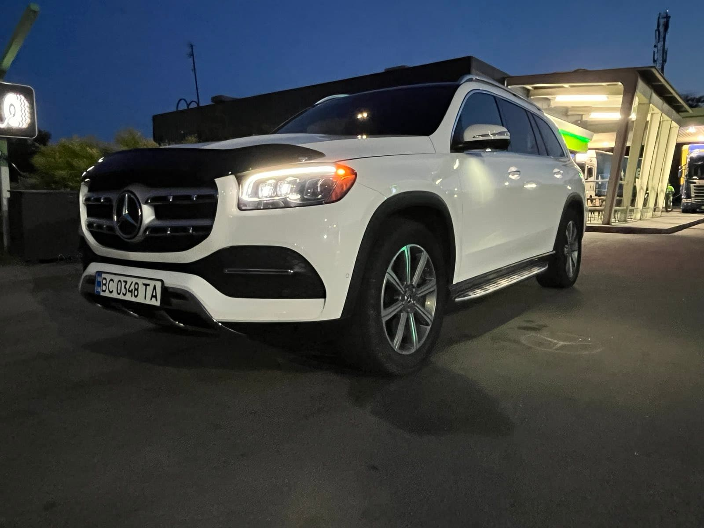
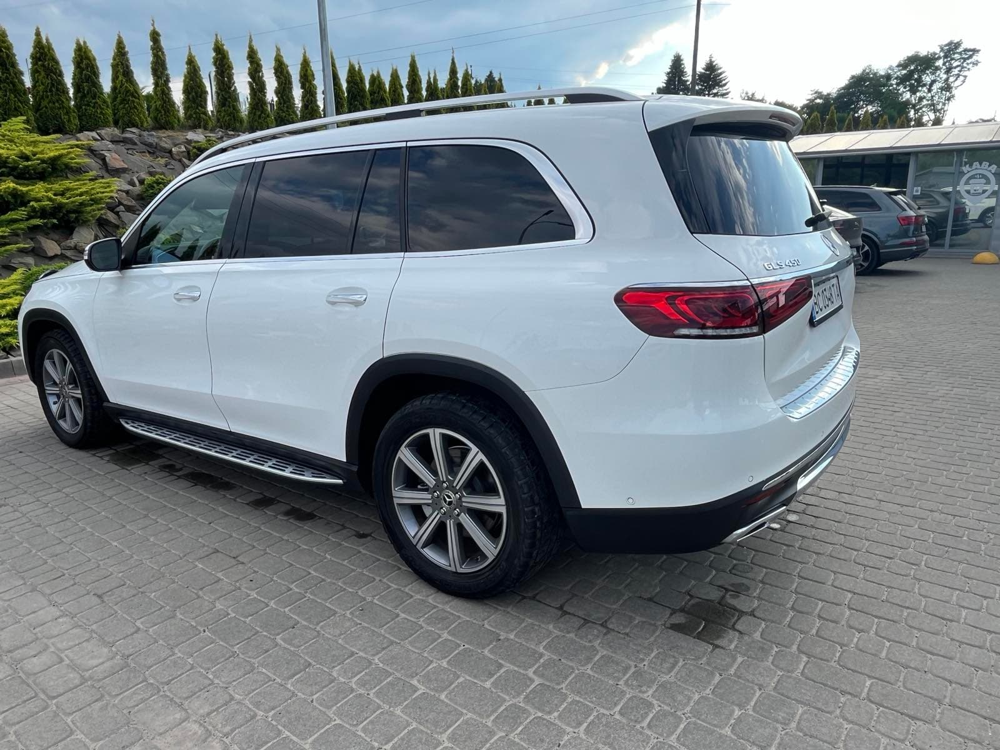
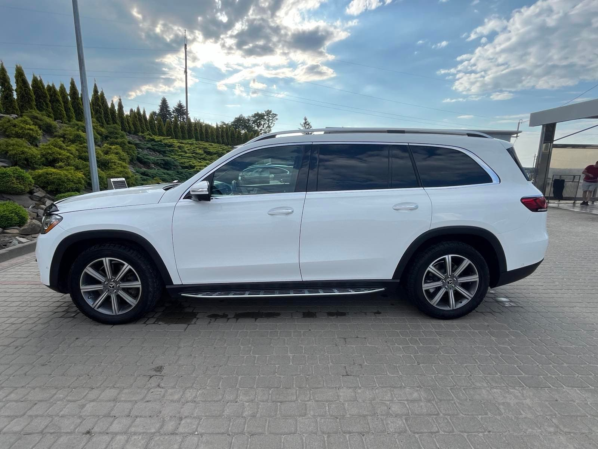
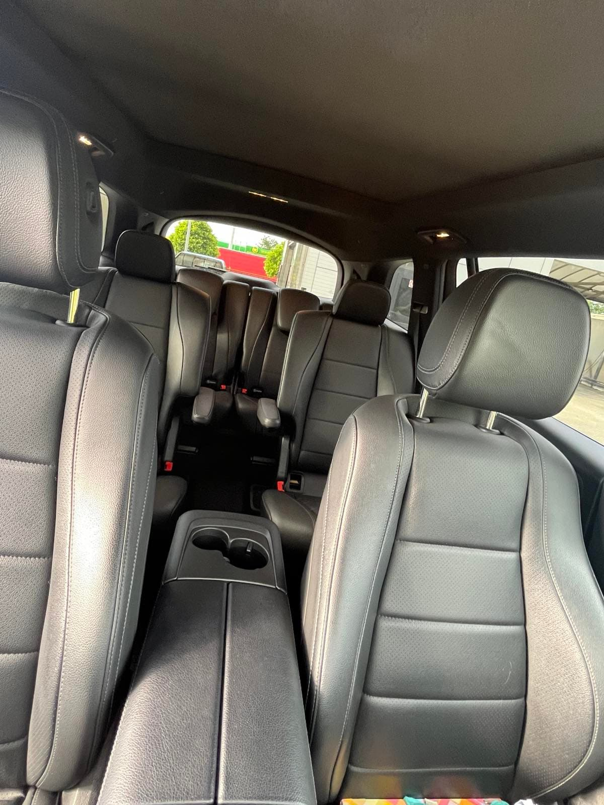
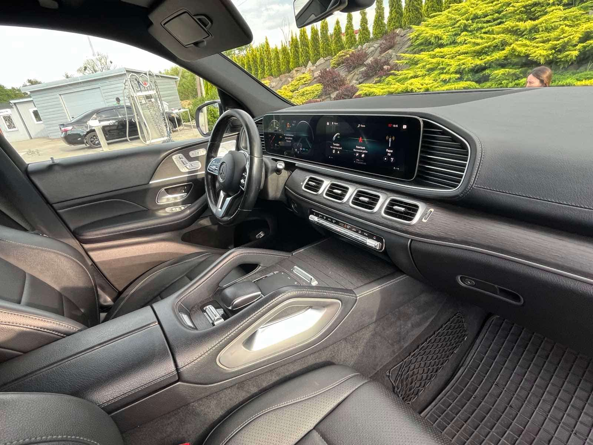
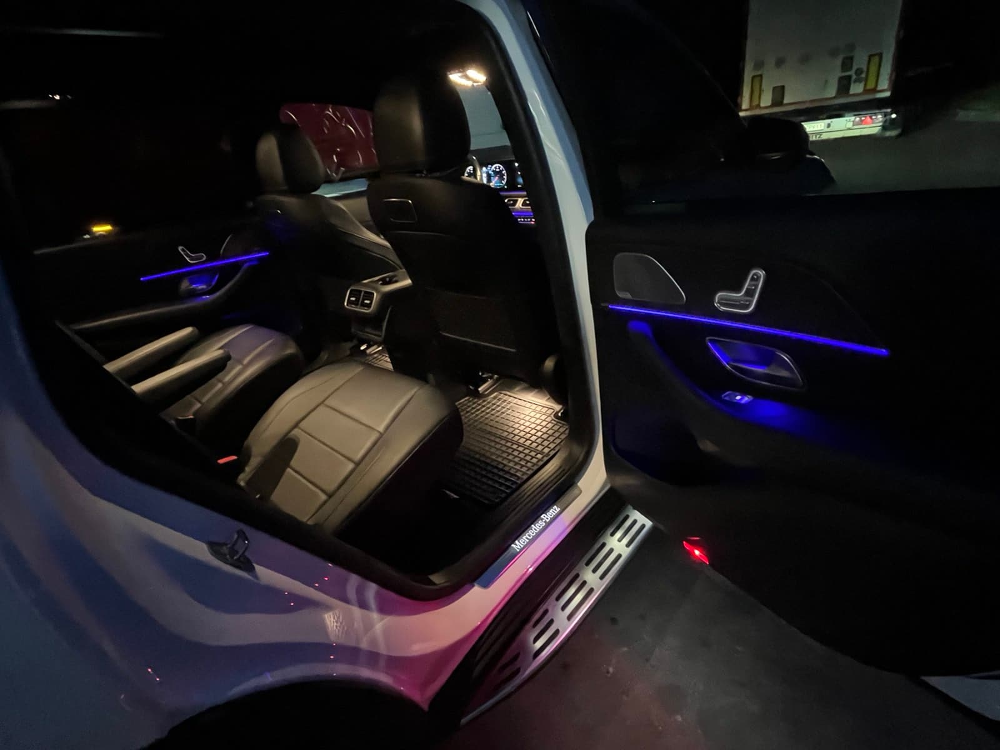
Приймаємо посилки для відправки до Європи
у Львові
Склад за адресою📍м. Львів, вул. Кульпарківська 93
за попередньою домовленістю із менеджером складу
📞+380974009800📞+380672131512
у Києві
кожного
ПН, ЧТ і СБ з 18:00 до 20:00
ВТ, ПТ і НД з 08:00 до 10:00
у 📍м. Києві, вул. Вокзальна📞+380914598888
📦 до Братислави
Приймаємо посилки зі всієї України новою поштою:
у м. Львові, 1 відділення
на ім'я Радченко Ілля 0954590000
або безпосередньо у м. Львові на складі, вул. Кульпарківська
Посилка обов'язково повинна бути підписаною, потрібно вказати:
- 📝 Братислава
- 📝 Прізвище, ім'я отримувача
- 📝 К-тний № тел. отримувача
Вартість пересилки 1€/кг за звичайні речі. Мінімальна вартість пересилки 10€💶
📦 до Відня
Приймаємо посилки зі всієї України новою поштою:
у м. Львові, 1 відділення
на ім'я Кузіль Мар'ян Володимирович 0974009800
Посилка обов'язково повинна бути підписаною, потрібно вказати:
- 📝 Відень
- 📝 Прізвище, ім'я отримувача
- 📝 К-тний № тел. отримувача
Вартість пересилки 1€/кг за звичайні речі. Мінімальна вартість пересилки 10€💶
📦 до Лінцу і Зальцбургу
Приймаємо посилки зі всієї України новою поштою:
у м. Львові, 1 відділення
на ім'я Кузіль Вікторія Мар'янівна 0978558008
Посилка обов'язково повинна бути підписаною, потрібно вказати:
- 📝 Лінц або Зальцбург
- 📝 Прізвище, ім'я отримувача
- 📝 К-тний № тел. отримувача
Вартість пересилки до Лінцу 1€/кг за звичайні речі. Мінімальна вартість пересилки 10€💶
Вартість пересилки до Зальцбургу 1.20€/кг за звичайні речі. Мінімальна вартість пересилки 10€💶
📦 до Мюнхену і передмістя
Приймаємо посилки зі всієї України новою поштою:
у м. Львові, 1 відділення
на ім'я Думенко Андрій 0980593128
Посилка обов'язково повинна бути підписаною, потрібно вказати:
- 📝 Мюнхен або передмістя(назва містечка)
- 📝 Прізвище, ім'я отримувача
- 📝 К-тний № тел. отримувача
Вартість пересилки 1.20€/кг за звичайні речі. Мінімальна вартість пересилки 12€💶
❗️Всі📦посилки транспортуються до Європи в сумках, валізах, рюкзаках і т.д. (не в коробках)
❗️Меблі, техніка, товар, брендовані чи ювелірні вироби, цінності тільки за попередньою домовленістю зі складом
❗️Заборонено передавати м'ясні, молочні, рибні продукти. Тютюн, вейп та нікотиновмісні препарати, продукти без заводської тари
Алкоголь виключно за домолвеністю зі складом
📦Збір/видача посилок в Братиславі
Приймаємо посилки у Братиславі згідно графіку:
- ✔️Понеділок-П'ятниця з 09:00 до 18:00
- ✔️Субота з 09:00 до 14:00
- ❌Неділя вихідний
Наш офіс знаходиться за адресою:
📍Chalupkova 2596/7, 811 09 Bratislava- 📞Наші контакти:
- +421948133123
Вартість пересилки до України 1.20€/кг за звичайні речі. Мінімальна вартість пересилки 10€💶
📦Збір/видача посилок у Відні
Приймаємо посилки у Відні за адресою:
📍Wien 1170, Wichtelgasse 66- 📞Наші контакти:
- +436604620008
- +4368110846055
- +4368110244022
Вартість пересилки до Львова 1€/кг за звичайні речі. Мінімальна вартість пересилки 10€💶
Вартість пересилки по Україні 1.20€/кг за звичайні речі. Мінімальна вартість пересилки 10€💶
📦Збір/видача посилок у Лінці
Приймаємо посилки у Лінці кожної п'ятниці з 17:00 до 18:00 за адресою:
📍Kärntnerstraße 16s, 4020 Linz- 📞Наші контакти:
- +436604590099
- +380978558008
Вартість пересилки до Львова 1€/кг за звичайні речі. Мінімальна вартість пересилки 10€💶
Вартість пересилки по Україні 1.20€/кг за звичайні речі. Мінімальна вартість пересилки 10€💶
📦Збір/видача посилок у Зальцбурзі
Приймаємо посилки у Зальцбурзі за графіком:
- ✔️Понеділок з 15:00 до 16:00
- ✔️Середа з 15:00 до 16:00
- ✔️П'ятниця з 15:00 до 16:00
- ✔️Неділя з 15:00 до 16:00
За адресою:
📍Engelbert-Weiß-Weg 10, 5020 SalzburgТакож проводимо адресний збір посилок в Зальцбурзі і околицях. Телефонуйте для домовленості
- 📞Наші контакти:
- +436604590000
- +380978558008
Вартість пересилки до Львова 1.20€/кг за звичайні речі. Мінімальна вартість пересилки 10€💶
Професійні перевезення вантажів з Німеччини до України.
Приймаємо та видаємо посилки у Мюнхені згідно графіку:📑
- ✔️Понеділок з 09:00 до 13:00
- ✔️Понеділок з 17:00 до 20:00
- ✔️Вівторок з 09:00 до 13:00
- ✔️Вівторок з 17:00 до 20:00
- ✔️Середа з 09:00 до 13:00
- ✔️Четвер з 17:00 до 20:00
- ✔️П'ятниця з 09:00 до 13:00
- ✔️Субота з 17:00 до 20:00
- ✔️Неділя з 09:00 до 13:00
- ✔️Неділя з 17:00 до 20:00
За адресою:
📍Ungererstraße, 80805 München, студентський парк- 📞Наші контакти:
- +4915738342187
- +4917626997124
Вартість пересилки по Україні 1.20€/кг за звичайні речі. Мінімальна вартість пересилки 10€💶 Вартість вказана за звичайні речі. Техніка, меблі, габарит, товар, бренд, ліки(косметика), запчастини, цінності та те що потребує страхування-за домовленістю
Приймаємо посилки у Мюнхені за вашими адресами згідно графіку:📑
- ✔️Понеділок з 16:00 до 20:00
- ✔️Вівторок з 16:00 до 20:00
- ✔️Четвер з 16:00 до 20:00
- ✔️Субота з 14:00 до 18:00
- ✔️Неділя з 16:00 до 20:00
ℹ️Адресний заїзд здійснюється для посилок від 20кг🧰
ℹ️Вартість послуги адресного заїзду для збору посилки 10€💶
ℹ️Вартість пересилки в Україну 1.50€/кг. Мінімальна вартість перевезення посилок 10€💶
ℹ️Техніка, товар, документи, товар новий б/у оцінюється індивідуально
Приймаємо та видаємо посилки у Мюнхені згідно графіку:📑
- ✔️Субота з 18:00 до 20:00
- ✔️Неділя з 10:00 до 13:00
За адресою:
📍P+R PARKPLATZ KLEPPERSTRASSE WEST поруч з вокзалом- 📞Наші контакти:
- +4915738342187
- +4917626997124
Вартість пересилки по Україні 1.20€/кг за звичайні речі. Мінімальна вартість пересилки 10€💶 Вартість вказана за звичайні речі. Техніка, меблі, габарит, товар, бренд, ліки(косметика), запчастини, цінності та те що потребує страхування-за домовленістю
🌃STAR-G HOTEL
Збір посилок кожного
- понеділка з 20⁰⁰ до 20³⁰
- четверга з 20⁰⁰ до 20³⁰
- неділі з 20⁰⁰ до 20³⁰
За адресою:
🧭Weimarer Str. 4, 80807 München🌆REGENT HOTEL
- Збір посилок кожної суботи з 13⁰⁰ до 14³⁰
За адресою:
🧭Seidlstr 2, 80335 München🏛️STYLES HOTEL
- Збір посилок кожного четверга з 18⁰⁰ до 19⁰⁰
За адресою:
🧭Kronstadter Straße 10-12, 81677 München🏢EURODOM
- Збір посилок кожного четверга з 19⁰⁰ до 19³⁰
За адресою:
🧭Stahlgruberring 28, 81829 München🏨Гуртожиток Ridler
- Збір посилок четверга з 20⁰⁰ до 20³⁰
За адресою:
🧭Ridlerstraße 13, 80339 München🏢West park-табір допомоги українцям
- Збір посилок кожної неділі з 13⁰⁰ до 14⁰⁰
За адресою:
🧭Leichtbauhalle Gerty-Spieß-Str. 9 u. 11, 81377 München🏢Притулок-Центр допомоги українцям
- Збір посилок кожної неділі з 15⁰⁰ до 16⁰⁰
За адресою:
🧭Hachinger-Bach-Straße 19, 81671 München🌃ФРАЙЗИНГ кожної
- ✔️суботи з 9⁰⁰ до 10⁰⁰
- ✔️вівторка з 17³⁰ до 18³⁰
🌆ЕРДІНГ кожної
- ✔️суботи з 10³⁰ до 11⁰⁰
- ✔️вівторка з 19⁰⁰ до 19³⁰
🏛️НОЙФАРН кожної
- ✔️суботи з 11³⁰ до 12⁰⁰
- ✔️вівторка 20⁰⁰ до 20³⁰
🏢ШТАРНБЕРГ кожної
- ✔️неділі з 9⁰⁰ до 9³⁰
🏨ФЮРСТЕНФЕЛЬДБРУК кожної
- ✔️неділі з 10³⁰ до 11⁰⁰
🏢ДАХАУ кожної
- ✔️неділі з 11³⁰ до 12⁰⁰
👋Запрошуємо на відпочинок до Греції, Коринфський залив, місцевість
Limni Vouliagmeni, Loutraki-Perachora 203 00
Пропоную відпочинок в мальовничій ⛰️гірській місцевості біля 🌊моря з кришталево чистою водою. Окремостоячий будинок, розміщення до 8 осіб, вартість проживання 150€💶/доба. Номери для 2 осіб, вартість проживання 70💶/доба. В будинку є все необхідне для повноцінного проживання. 📡Інтернет, телевізори, посуд, техніка і т.д. Для відпочиваючих в користувані є 🚙позашляховик на сім людей для поїздок в мальовничі бухти з кришталевою водою і сосновими деревами (безкоштовно). Відвідаєм сільські базари з дешевими і смачними 🥬овочами, 🍉фруктами, 🦐рибою та 🍷вином.
Бронювання відпочинку
📞+380676762895 Viber/Whatsapp 📞+306955186477 Viber/Whatsapp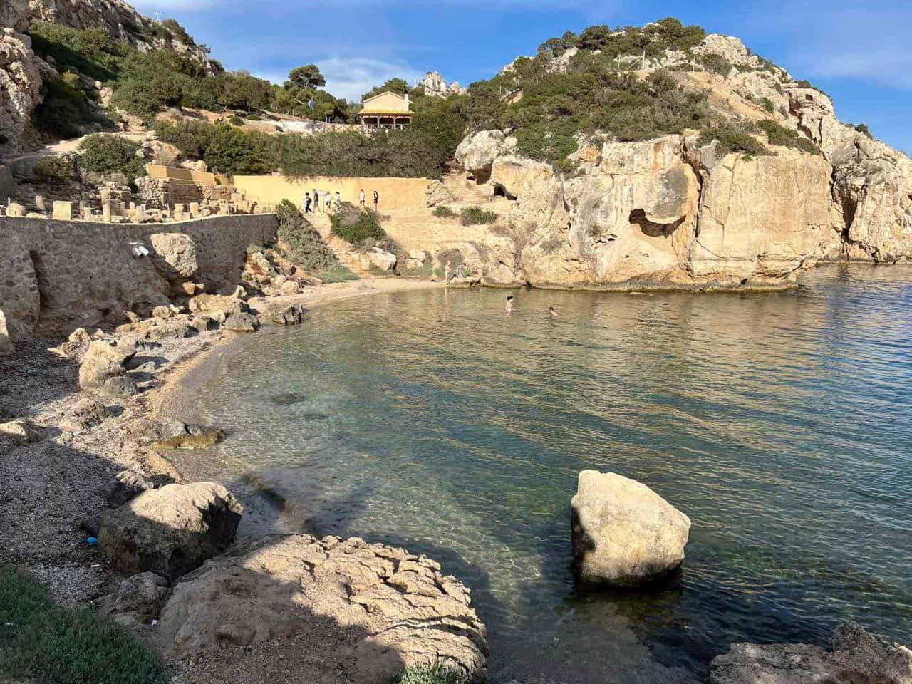
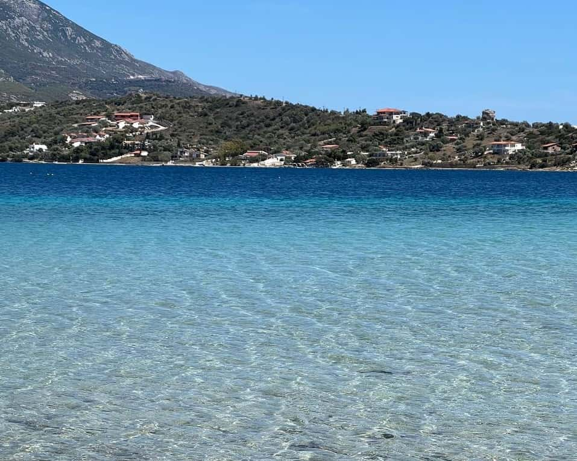
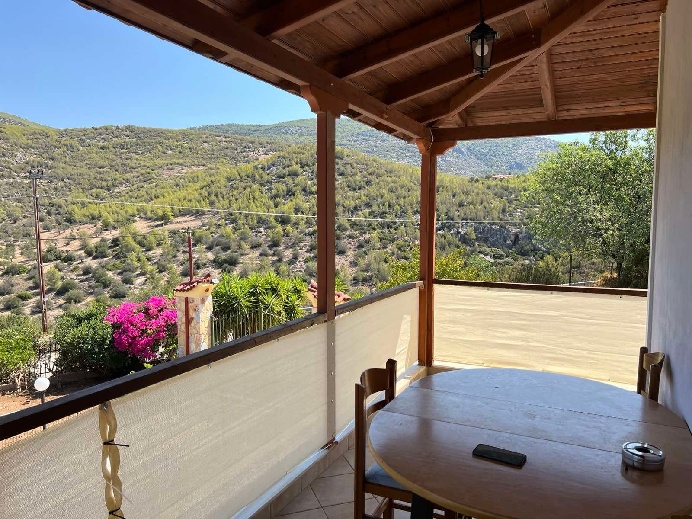
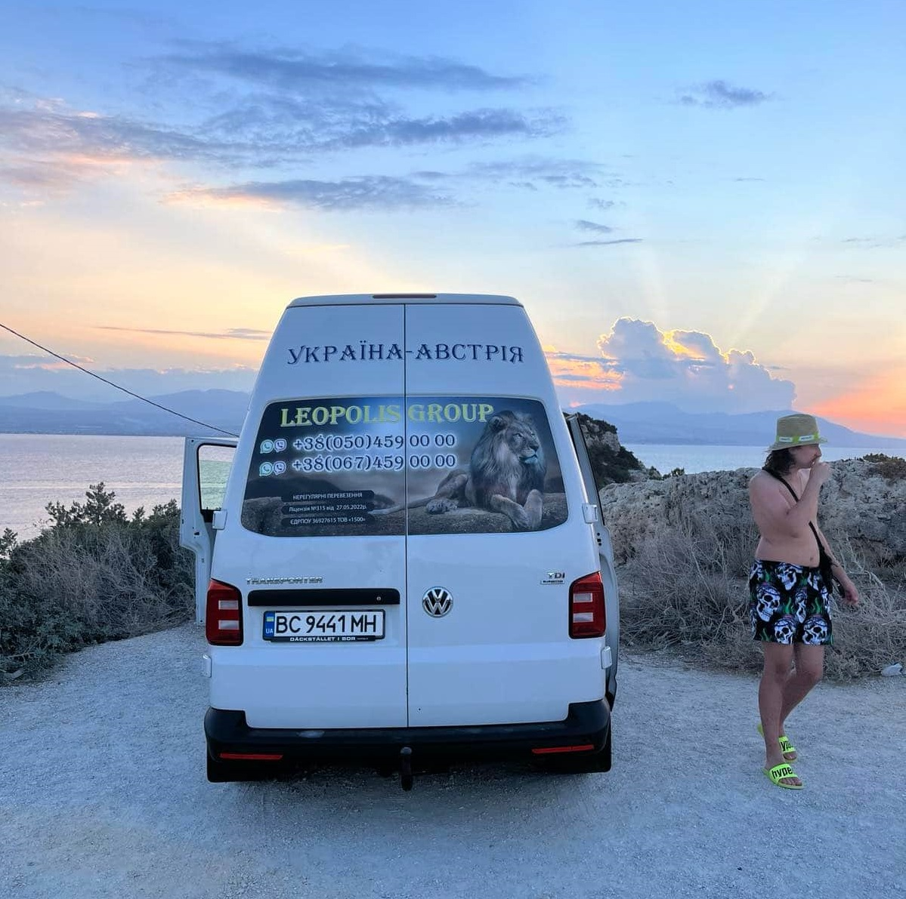
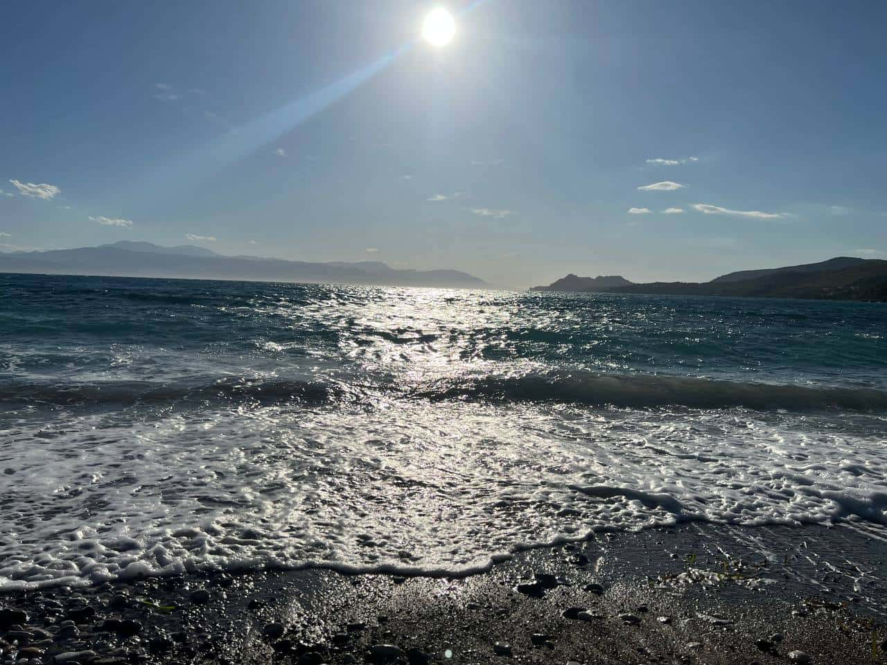
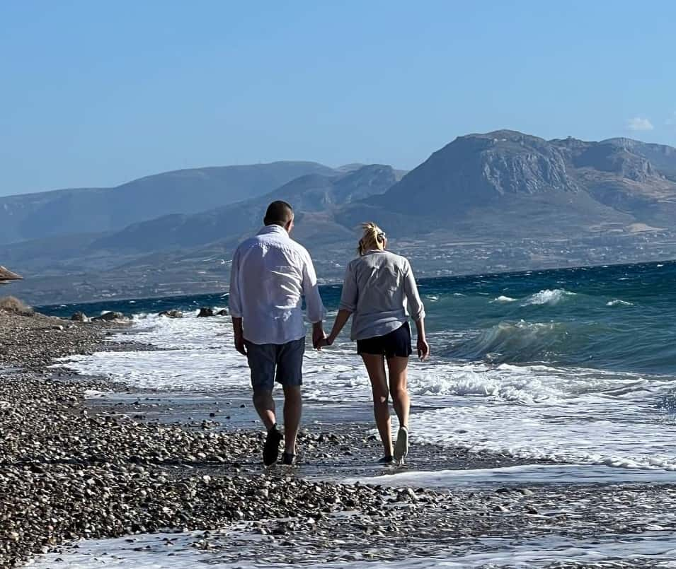
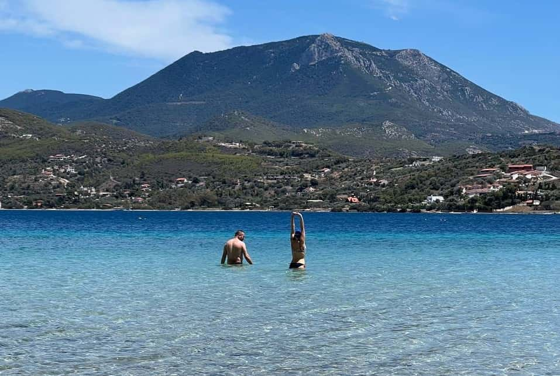
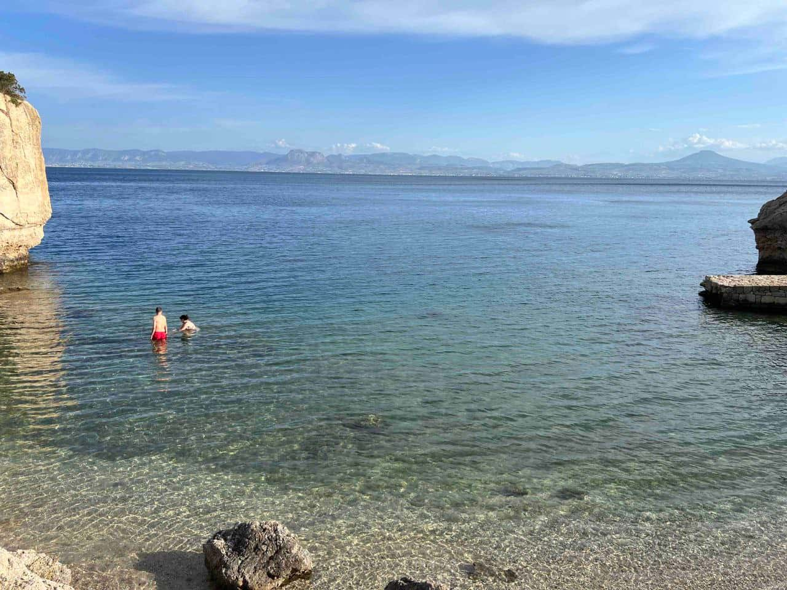
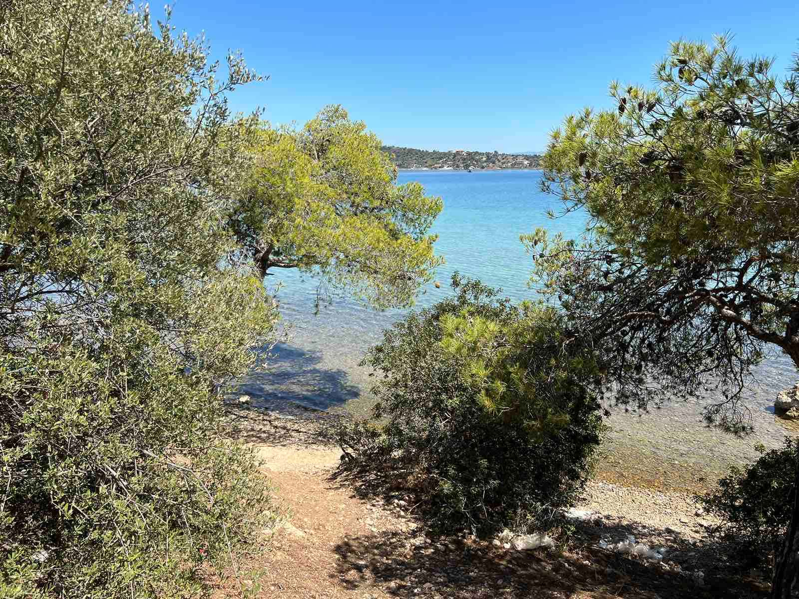
Про нас
"LEOPOLIS GROUP" - компанія з більш ніж 15 річним досвідом на ринку вантажо - пасажирських перевезень.
- Пропонуємо:
- ✅високу якість послуг
- ✅комфортний автотранспорт
- ✅надійних водіїв
- ✅добрі ціни
- ✅чесну працю
Проводимо збір посилок в обидва напрямки. Бережна і швидка доставка ваших посилок, техніки та меблів. Приймаємо і відправляємо посилки офіційно від нової пошти згідно договору про співпрацю. Гарантуємо якість і професіоналізм! Звертайтеся за консультацією
- 📞Наші контакти в Україні:
- ☎️ +380504590000 Марія (менеджер по запису пасажирів)
- ☎️ +380674590000 Оксана (менеджер по запису пасажирів)
- ☎️ +380974009800 Вікторія (інформаційна підтримка)
- ☎️ +380672131512 Ілля (завскладу)
- ☎️ +380978558008 Ілля (завскладу)
- ☎️ +380914598888 (збір/видача посилок в Києві)
- 📞Наші контакти в Австрії:
- ☎️ +436604620008
- ☎️ +4368110846055
- ☎️ +4368110244022
- 📞Наші контакти в Німеччині:
- ☎️ +4915738342187
- ☎️ +4917626997124